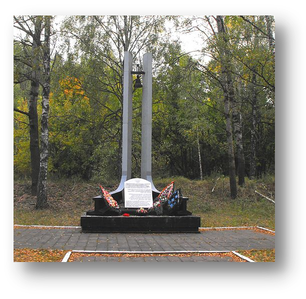
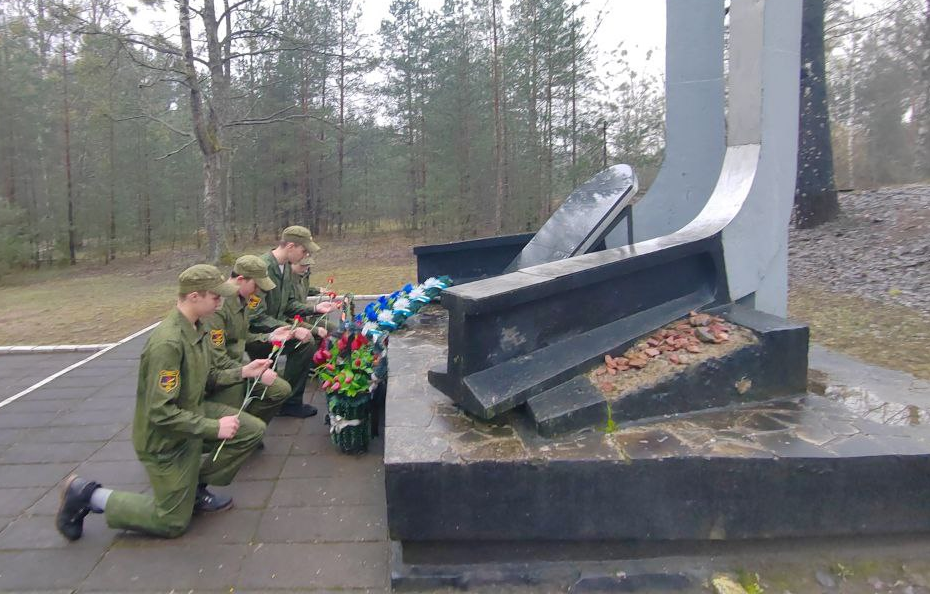
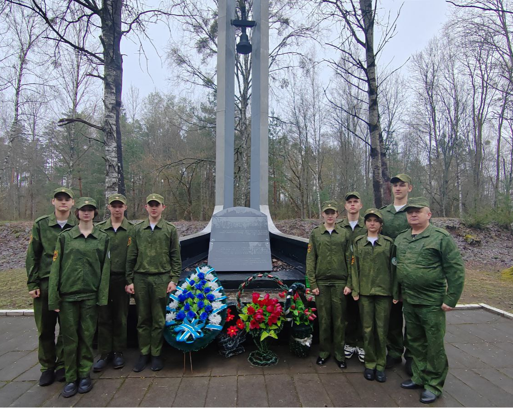

Бронная Гора



Урочище Бронная Гора – это место массового уничтожения и захоронения в основном мирных граждан немецкими оккупационными властями во время Великой Отечественной войны в 1942 – 1943 годах. Всего на станцию Бронная Гора за время оккупации прибыло 186 вагонов с обреченными на жизнь людьми. К ноябрю 1942 года на этом месте были убиты более 50 000 человек.
человек убито к ноябрю 1942 года
186 вагонов с обреченными людьми
В 1993 году на месте расстрела мирных жителей установлена стела. Урочище Бронная гора, как место массового уничтожения людей, увековечено в мемориальный комплекс «Хатынь».
Май-июнь 1942 года
В мае-сентябре 1942 года в урочище были вырыты ямы длиной от 25 до 50 метров, шириной 10-12 метров, и глубиной 4 метра. Ямы были обнесены столбами с колючей проволокой и окружающая территория тщательно охранялась подразделениями СС и СД. На данную территорию пропускали только пригнанных из ближних деревень жителей для копки ям.
Первые эшелоны смерти
Первые пять эшелонов с обреченными людьми прибыли в июне 1942 года.
Первый эшелон прибыл со станции Береза-Картузская, он состоял из нескольких вагонов с охраной и боеприпасами и 16 переполненных вагонов с евреями — не менее 200 человек в каждом. Все они были узниками гетто «Б» в Берёзе.
Второй эшелон состоял из 46 вагонов и прибыл со станций Дрогичин, Яново и Городец. В вагонах абсолютное большинство составляли евреи. Как и в первом эшелоне, вагоны были чрезвычайно переполнены — не менее 200 человек в каждом.
Третий эшелон с 40 вагонами, переполненными евреями, прибыл из Бреста.
Четвёртый эшелон из 18 вагонов пришел со станций Пинск и Кобрин. Во всех вагонах находились евреи.
Пятый поезд прибыл из Бреста. Все его 13 вагонов были заполнены заключенными из брестской тюрьмы — евреями, поляками и белорусами.
Все вагоны подавались на железнодорожную ветку, которая проходила от центральной магистрали на 250—300 метров к ямам-могилам. Многие люди умерли уже во время пути от невыносимых условий — истощения, давки и нехватки воздуха.
Процесс уничтожения
На специально созданных площадках привезённым людям приказывали выгрузиться и раздеться догола — всем, женщинам, детям и мужчинам. Затем их тщательно осматривали и отбирали найденные драгоценности. Голых людей гнали к ямам, заставляли спуститься вниз по лестнице и ложиться плотными рядами лицом в землю. Заполненный ряд расстреливали из автоматов, а сверху приказывали ложиться следующим жертвам — и так повторялось до полного заполнения ямы. После расстрелов вагоны загружались одеждой убитых людей и отправлялись обратно.
В июне 1942 года также были расстреляны около 800 рабочих военных складов — их убили и закопали возле бараков в 400 метрах от станции по направлению к трассе Москва-Варшава.
Сокрытие следов
В марте 1944 года во время отступления фашисты решили замести следы и сжечь трупы убитых на Бронной Горе. Для этого жителей города Бреста заставляли выкапывать трупы из могил и сжигать их. Погребальные костры горели круглосуточно в течении 15 дней подряд. После окончания работ фашисты расстреляли своих принудительных помощников, а на месте сожжения трупов посадили молодые деревья.
Мемориал сегодня
Монумент увенчан колоколом, а надписи на мраморных плитах выполнены на четырех языках: белорусском, русском, на иврите и идиш. На открытии обелиска 17 июля 1994 года присутствовал посол Израиля в Республике Беларусь, а поклониться памяти расстрелянным жертвам геноцида на это место приезжают граждане Израиля, Польши, Англии, Соединенных Штатов Америки, Италии, Австралии и других государств. Сердца людей зовут их сюда – в лесной массив, где во время Великой Отечественной войны были убиты их близкие.